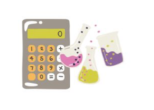

Calculadora %m/v
Ingresa los valores y calcula el resultado
Ejemplo Resuelto
Un laboratorio prepara una solución disolviendo 5 g de sal (NaCl) en suficiente agua para completar un volumen total de 100 ml. Calcule el %m/v de la solución.
Solución: %m/v = (masa/volumen) * 100 = (5 / 100) * 100 = 5%.